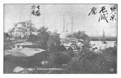
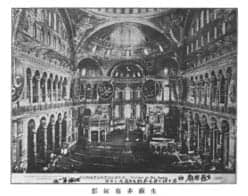

Resim: 7
Üstte sağ: 突京厄蔑庙, Türk başkenti Sultanahmet Camii.
Üstte sol: 生苏非庙, Ayasofya Camii.

Resim: 8
Resim üstünde: 生苏非殿内君士但丁垒王茹斯底年成凡三百年，地球第一庙
Ayasofya Jüstinyen tarafından 300 yılda yaptırılmıştır, dünyanın bir numaralı mabedidir.